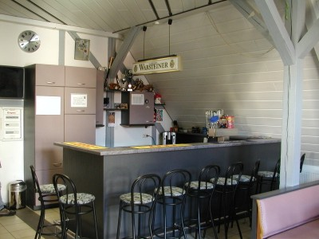

Kurz-Chronik
Wir sind ein zusammen gewürfelter Haufen von Motorradfahrern, die aus der Not heraus 1989 einen e.V. gegründet haben. Damals hatte die Jugend im Dorf nur eine Parkbank, um sich zu treffen. Der überwiegende Teil der Jugendlichen fuhr bereits damals ein Motorrad und so lag es nahe einen Motorradclub zu gründen.
Mittlerweile sind die Zweiradfreunde eine anerkannte Institution im Dorfleben. Wir organisieren kleinere Events im Ort und natürlich auch die eine oder andere Ausfahrt übers Jahr.
Treffen
Wir treffen uns regelmäßig freitags in unserem Clubraum im Zentrum Berlichingens, um das Vereinsleben zu pflegen und um Neuigkeiten auszutauschen. Unser Clubraum ist nur für Vereinsmitglieder geöffnet, aber jeder, der sich über uns informieren möchte oder einfach nur ein paar Toureninfos benötigt, ist bei uns natürlich herzlich willkommen.
Club-Haus
Unser Clubraum liegt mitten im Ort am Marktplatz in der alten Zehnt-Scheune und ist freitags ab 20.00 Uhr geöffnet. Für ein kleines Bier oder auch zwei und für Benzingespräche sind wir jederzeit bereit.
what3words address: ///pierced.psycho.retied
